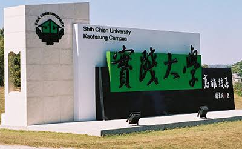
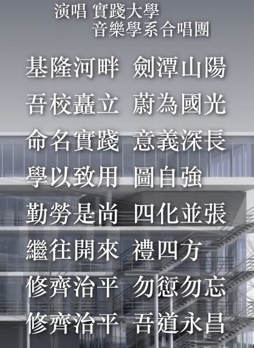
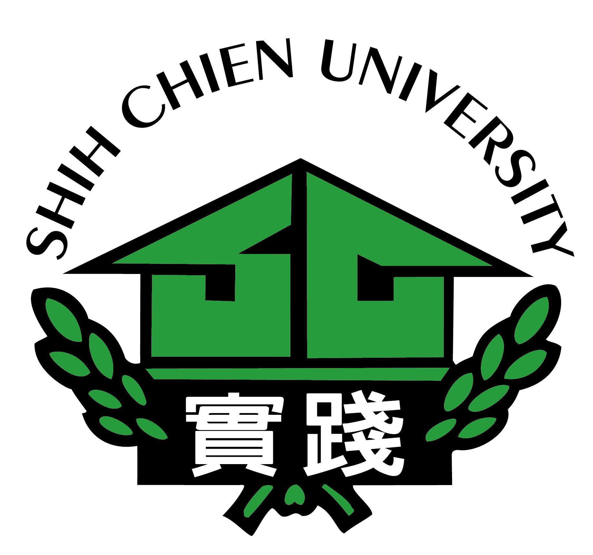

History

Origin of the Name
The founder, Mr. Tung-Min Shieh, deeply embraced the traditional Chinese philosophy of cultivating oneself, regulating the family, governing the state and bringing peace to the world. Believing that the family is the foundation of the nation, and that a strong, prosperous country must begin with healthy families, he resolved in 1957 to establish a school of home economics. On March 26 of the following year, the first home economics school in the Republic of China, the private Shih Chien College of Home Economics, was founded.
The founder also set out the educational philosophy of "earnest practice, from self-cultivation to peace in the world," and the school was therefore named "Shih Chien," meaning practice. The name expresses the philosophy of life advocated by Wang Yangming: the unity of knowledge and action, acting as soon as one knows. The university teaches students to use both hands and mind, turning thought into practice at every moment and gaining wisdom and ability through practice.
When the school was founded, Mr. Shieh also made "one belief: hard work brings happiness; and three habits: courtesy, tidiness, and putting things back in their place" the basic guidelines for student life. This practical spirit of starting from small things is the most fundamental educational principle of the university.
Founding History
The development of the university's departments also reflects this steady, practical philosophy. The school began with only a Department of Home Economics, and later added fashion design, food and nutrition, accounting, business administration, social work, music, fine arts and crafts, and child care. Following changes in society, commerce and information technology, it went on to add banking and insurance, international trade, business management, interior design, industrial product design, information management, media design, tourism management and architecture.
The key stages of the university's development are shown in the Brief History timeline above, and they show how widely its practical approach to education has been recognized.
After more than 50 years of development, the university is now a comprehensive institution with campuses in Taipei and Kaohsiung and five colleges: Human Ecology, Design, Management, Commerce and Information, and Culture and Creativity.
Educational Philosophy and Goals
Taken as a whole, the founder's motivation, the guidelines for professional and life education, and the structure of the colleges and departments all reflect a spirit that values fundamentals and practicality, with teaching and research oriented toward practical application. The university aspires to nurture people for the nation and society who are diligent, sincere, optimistic and enterprising, who have a rich inner life and a passion for service, and who possess creativity, the ability to put ideas into practice, and a global outlook.
From the beginning, the founder pointed out that the family is the seedbed of life and the foundation of social organization. For people to live fulfilling lives and for society to be sound, the first priority is to set the family right; when families are right, the world is at peace. Promoting home economics, the study of managing the family, was therefore the original purpose of the school. At its founding, Mr. Shieh set four goals for the family, with the following purposes:
- Ethical families – laying the foundation of the family
- Scientific families – improving family life
- Productive families – developing the family economy
- Artistic families – adding joy to family life
The school was therefore founded to train young women in managing family affairs, to increase their practical knowledge and skills, and to develop sound bodies and minds. Its overall educational goal was "to research and promote knowledge of the science of living, and to enhance well-being and the meaning of life."
From its junior college years beginning in 1958, through its upgrade to a college in 1991 and its renaming as a university in 1997, the university has continually adjusted its direction to keep pace with a changing world. It is positioned as a university of living sciences that advances both teaching and research. Its goal is to cultivate graduates of talent and virtue with humanistic care, creativity in daily life, scientific literacy and an international outlook. Through its philosophy of innovation, practice and excellence, it strives to become the best university of living sciences in the Chinese-speaking world.
University Anthem
| Lyrics | Tung-Min Shieh |
|---|---|
| Music | Lu Chuan-Sheng |

University Emblem

Download PDF Download PNG
 Download JPG
Download JPG
 Download PNG
Download PNG